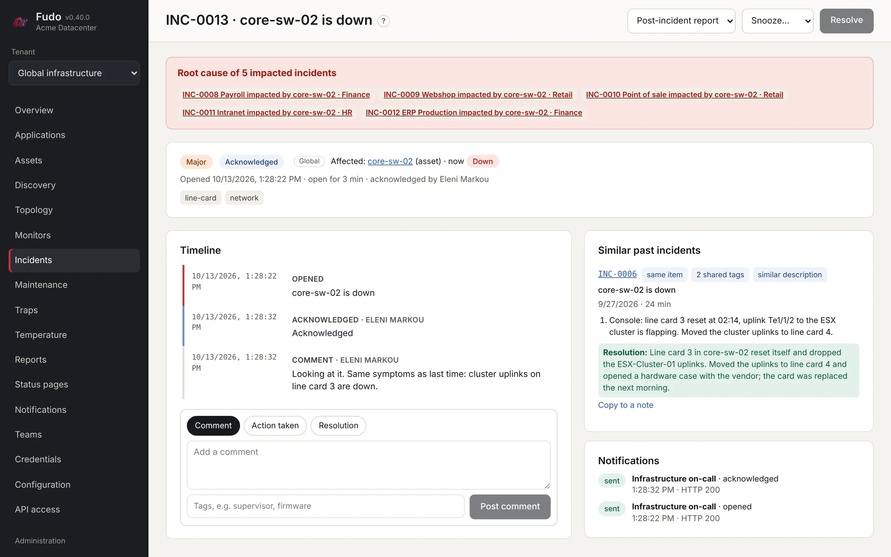
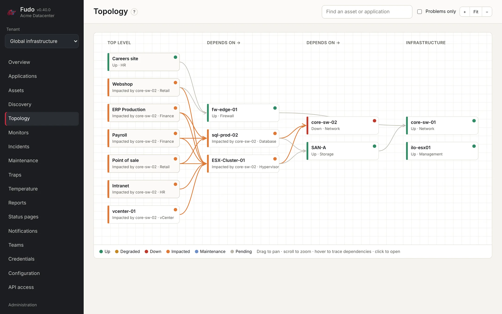
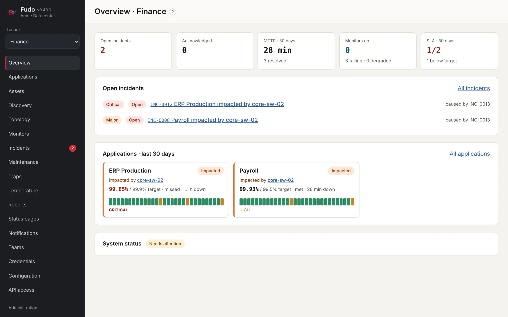
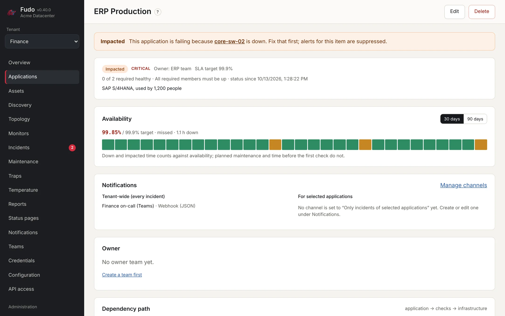
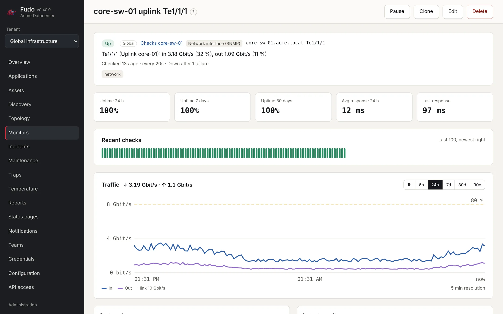
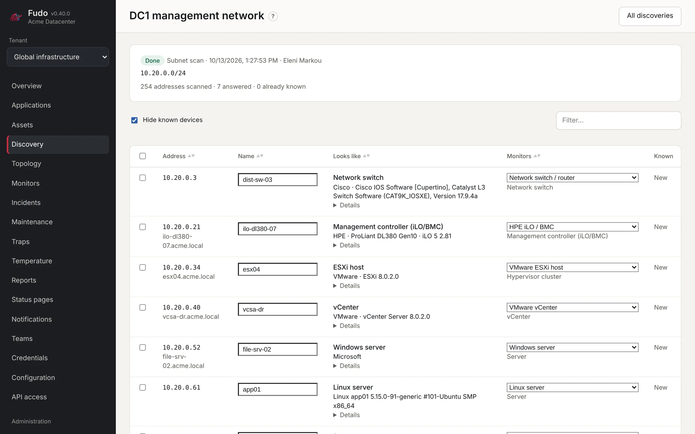
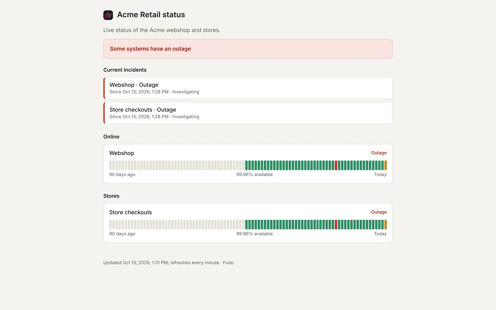
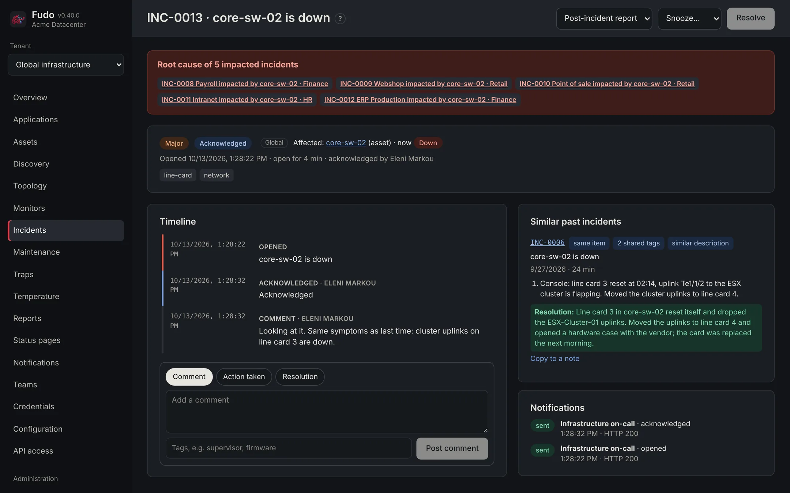

When a core switch fails, you get one incident, not fifty alerts.
Fudo is self-hosted monitoring and incident management for teams that run shared infrastructure for several business units. It knows what depends on what, so it opens one incident for the cause and links everything it takes down.
- Free software, AGPL-3.0
- Runs on your servers
- 13 languages
Root cause of 5 impacted incidents in Finance, Retail and HR. Last time: line card 3 reset; uplinks moved to line card 4.
A look inside
Every screen below is the real application, with a demo data center: three tenants, a shared ESX cluster and a core switch that has just failed.
The switch is the incident
The applications it took down in three tenants are linked to it, so one person handles the cause while the business units see what is going on.
- Similar past incidents with the note that resolved them
- Acknowledge, snooze, post-incident report
- Notifications sent once, to the right channel

What depends on what
Applications on the left, the infrastructure they need on the right. When something fails, the impact is traced through the map.
- Hover a node to trace its dependencies
- “What if this fails?” predicts the impact before maintenance

Each business unit, its own view
Tenants have their own applications, channels, reports and status pages. Shared infrastructure is managed once and shows up as the cause in every tenant it affects.
- Roles per tenant, infrastructure admins for the shared part
- Mandatory two-factor sign-in

Applications and their SLA
An application groups the checks that tell whether it works, plus the infrastructure it needs. Availability is measured against its target, day by day.
- All, any or n-of-m members required
- Planned maintenance does not count against the SLA
- PDF and CSV reports, emailed on a schedule

Switch ports, over SNMP
Link state, traffic in and out, utilisation and errors per minute for any port of a switch, router or firewall.
- Find the interface from a list, or add several at once
- Degraded from 80 % utilisation, or your own limit
- SNMP traps with automatic or manual clearing

It finds your devices
Scan a subnet, read vCenter, the neighbour tables of your switches or HPE OneView. Review what was found, then create assets and monitors in one go.
- Recognises iLO, ESXi, vCenter, switches, storage, Windows and Linux
- Known devices are hidden
- Dependencies come along

Status pages
Public or internal status pages per tenant, with current incidents, planned maintenance and 90 days of history. They refresh every minute.

Light, dark or yours
Light, dark and Monokai themes, or follow the operating system. Add your own colours by dropping a file into a folder.

Made for the people who run the data center
Fudo started where uptime checkers stop: shared infrastructure, many owners, and the question every on-call engineer asks first, “what actually broke?”
One alert per root cause
Model applications, servers, clusters, storage and switches. When a switch fails you are paged for the switch, with every impacted application linked to it.
Shared infrastructure, many tenants
Business units get their own applications, channels and reports. The infrastructure they share is managed once, in a global scope, by the team that runs it.
Incidents that remember
Resolution notes come back on similar incidents and are quoted in their alerts, so the fix from last spring is on screen before anyone starts digging.
Discovery and templates
Find devices on a subnet, in vCenter, through LLDP and CDP or in HPE OneView. Templates add the right checks for an iLO, an ESXi host or a storage array.
Notifications where you are
Email, Microsoft Teams, Slack, webhooks and more than 100 other services, routed per tenant, application and severity. On-call rotations page people in their own order.
Availability and SLA reports
Around the clock or business hours only, as PDF or CSV, emailed on a schedule. Planned maintenance is kept out of the numbers.
The fix from last time, before anyone starts digging
Every note added while working an incident is kept: what was tried, and what fixed it. When something similar happens, Fudo finds it by the item, the root cause, the tags and the words used.
- Resolution notes appear on the new incident and in its alert
- Post-incident reports as PDF, with the timeline
- Acknowledge from the alert itself, without signing in
Similar past incidents
core-sw-02 is down
16 days ago · resolved in 24 min
- Console: line card 3 reset at 02:14, uplink Te1/1/2 to the ESX cluster is flapping. Moved the cluster uplinks to line card 4.
Resolution: Line card 3 in core-sw-02 reset itself and dropped the ESX-Cluster-01 uplinks. Moved the uplinks to line card 4 and opened a hardware case with the vendor; the card was replaced the next morning.
Quoted in the alert to the on-call channel:INC-0013 core-sw-02 is down Last time this was resolved by: Line card 3 in core-sw-02 reset itself…
Checks for everything in the rack
From a web page to the inlet temperature of a blade. Each check can belong to an asset, so its failure is understood in context.
Web
- HTTP(S), with keyword or JSON value
- TLS certificate expiry
- Domain expiry
- DNS records
Network
- Ping and TCP port
- SNMP values and counters
- Network interface traffic
- SNMP traps
- NTP
Systems
- SSH command
- Docker container
- LDAP and Active Directory
- SMTP
Infrastructure
- vCenter virtual machines
- HPE iLO and Redfish health
- Inlet and room temperature
Databases
- Microsoft SQL Server
- PostgreSQL
- MySQL and MariaDB
- MongoDB and Redis
Passive
- Push heartbeats for jobs and backups
- Traps from switches, UPS and storage
Passwords and SNMP communities live in shared credentials, encrypted, and are used by as many checks as need them. Coming from Uptime Kuma? Fudo imports its backup or database, notifications included.
Everything in the browser
No configuration files to edit after the first start: settings, users, channels and backups are all managed in the interface.
In your language
- English
- Deutsch
- Français
- Español
- Italiano
- Nederlands
- Português (Brasil)
- Ελληνικά
- Polski
- Română
- Türkçe
- Български
- العربية
- Setup wizard and two-factor sign-in
- Invitations by email, sign-in with an authenticator app for everyone, recovery codes.
- Configuration as code
- Export a scope as YAML, keep it in git, import it back with a preview of every change.
- Maintenance windows
- One-off or recurring, for assets, monitors or applications. Nobody is paged and the SLA is not affected.
- Encrypted backups
- On demand or on a schedule, restored from the browser on the same or a new server.
- Audit log and API
- Every sign-in and change is recorded. A documented REST API with tokens per tenant.
Running in three commands
Fudo runs with Docker Compose: the application, its worker and PostgreSQL with TimescaleDB. Then open port 8080 and follow the setup wizard.
You need a Linux server with Docker and the Compose plugin, and network access to what you want to monitor.
$ git clone https://github.com/labrouss/fudo.git && cd fudo $ cp .env.example .env # set POSTGRES_PASSWORD, APP_SECRET and PUBLIC_URL $ docker compose up -d --build